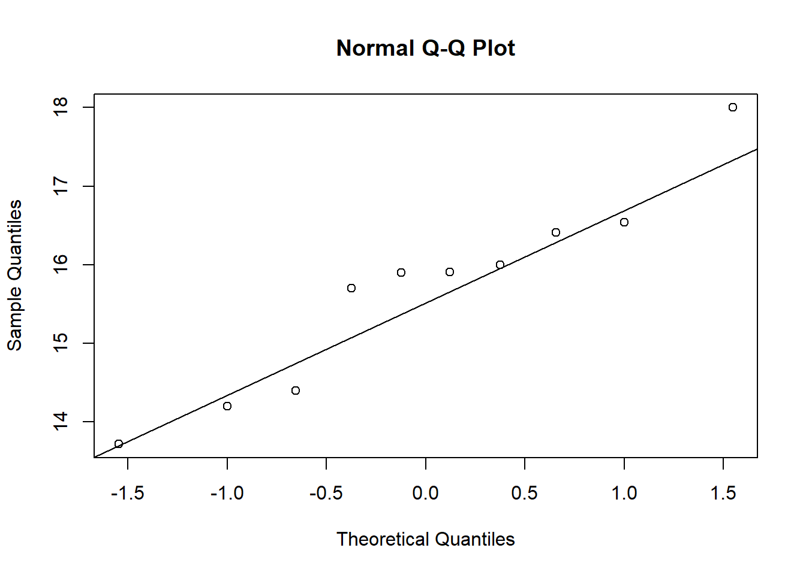
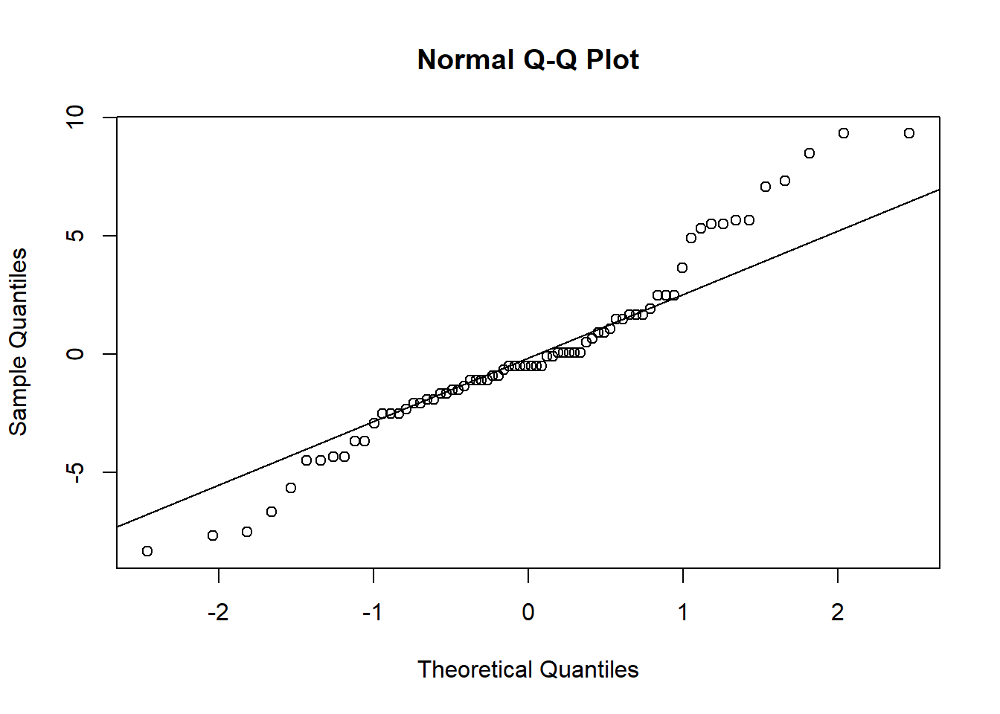

library(gsheet)
library(tidyverse)
library(report)
library(emmeans)
library(estimability)
library(see)Aula 6
Aula 6
Bibliotecas
Inferencial
Nesta aula, consideramos o alfa = 0,05.
Dois grupos independentes
mg <- gsheet2tbl("https://docs.google.com/spreadsheets/d/1bq2N19DcZdtax2fQW9OHSGMR0X2__Z9T/edit#gid=983033137")Visualização
mg |>
ggplot(aes(trat, comp))+
geom_boxplot()
Hipótese científica: a suplementação de Mg reduz o tamanho da lesão. Hipótese estatística: H0 = as médias não diferem entre os tratamentos.
Visualmente: Parece que tem um efeito da suplementação de magnésio reduzindo a redução da lesão. Indica que o Mg tem um efeito de indução de resistência na planta.
*A diferença entre as medianas dá o tamanho desse efeito.
Para dois grupos independentes, com normalidade garantida, usa-se normalmente o teste T. É independente porque são dois grupos medidos individualmente (10 plantas para trat control e 10 plantas para Mg2). * Se tivesse avaliações em diferentes tempos na mesma planta, seria dependente, pois a resposta seria dependente da planta.
O box indica normalidade, de acordo com a simetria e dá uma ideia de variancia, por isso, para conjuntos com n > ou = 8, o boxplot pode ser bom para viasualizar e fazer a estatística inferencial.
Teste T
Função que roda o teste T: t.test
Para o t.test precisa que os dados estejam no formato largo (a função pede os dados (tratamentos) em colunas separadas).
Também precisa verificar: homogeneidade de variâncias e normalidade (Shapiro-wilk test).
mg2 <- mg |>
pivot_wider(names_from = trat,
values_from = comp)
teste1 <- t.test(mg2$control, mg2$Mg2)Assummindo que o test T está ok (normalidade e variâncias homogêneas), como o p-valor foi muito menor que 0,05, pode-se rejeitar a hipótese nula (H0). Ou seja, existe um efeito de indução de resistência.
Se o intervalo de confiança não inclui o 0, dá diferença.
Teste de normalidade
Pode ser feito visualmente, mas existe um teste que avalia a normalidade: shapiro.test No shapiro test a H0 = normalidade. Se p-value for maior do que 0,05, não rejeita H0, ou seja, assume normalidade. Se o p-valor for menor que 0,05, rejeita H0, então assume não normalidade.
Como para os dois tratamentos foi maior 0,05, assume normalidade para os tratamentos.
shapiro.test(mg2$control)
Shapiro-Wilk normality test
data: mg2$control
W = 0.93886, p-value = 0.5404hist(mg2$control)
shapiro.test(mg2$Mg2)
Shapiro-Wilk normality test
data: mg2$Mg2
W = 0.97269, p-value = 0.9146hist(mg2$Mg2)
- normalmente variáveis numéricas contínuas tendem a apresentar normalidade.
Outra forma de verificar a normalidade:
qqnorm(mg2$control)
qqline(mg2$control)
Teste de variância
H0 = as variâncias são homogêneas
Como valor p é maior que 0,05, assume que são homogeneas
var.test(mg2$control, mg2$Mg2)
F test to compare two variances
data: mg2$control and mg2$Mg2
F = 0.67654, num df = 9, denom df = 9, p-value = 0.5698
alternative hypothesis: true ratio of variances is not equal to 1
95 percent confidence interval:
0.1680428 2.7237436
sample estimates:
ratio of variances
0.6765394 Como as variancias e a normalidade estão okay, pode usar o teste T normalmente (tipico caso de análise paramétrica).
Caso a variancia fosse heterogênea, poderia utilizar o teste T, porém deve informar que as variancias são heterogeneas:
t.test(mg2$control, mg2$Mg2,
var.equal = FALSE)
Welch Two Sample t-test
data: mg2$control and mg2$Mg2
t = 8.1549, df = 17.354, p-value = 2.423e-07
alternative hypothesis: true difference in means is not equal to 0
95 percent confidence interval:
3.825607 6.490393
sample estimates:
mean of x mean of y
15.678 10.520 Uso da função report
O report cria um “textinnho” sobre o teste T que pode ser utilizado para justificar a estatística.
report(teste1)Effect sizes were labelled following Cohen's (1988) recommendations.
The Welch Two Sample t-test testing the difference between mg2$control and
mg2$Mg2 (mean of x = 15.68, mean of y = 10.52) suggests that the effect is
positive, statistically significant, and large (difference = 5.16, 95% CI
[3.83, 6.49], t(17.35) = 8.15, p < .001; Cohen's d = 3.65, 95% CI [2.14, 5.12])Dois grupos dependentes
Dependencia: mesmo avaliador em tempos diferentes
escala <- gsheet2tbl("https://docs.google.com/spreadsheets/d/1bq2N19DcZdtax2fQW9OHSGMR0X2__Z9T/edit#gid=1729131173")Como são dois grupos (avaliação com escala e sem escala), pode usar o Teste T novamente, todavia deve indicar o argumento de que é pareado.
Visualização
escala |>
ggplot(aes(assessment, acuracia))+
geom_boxplot()
Teste T
escala2 <- escala |>
select(assessment, rater, acuracia) |>
pivot_wider(names_from = assessment,
values_from = acuracia)
t.test(escala2$Aided1, escala2$Unaided,
var.equal = FALSE,
paired = TRUE)
Paired t-test
data: escala2$Aided1 and escala2$Unaided
t = 4.4214, df = 9, p-value = 0.001668
alternative hypothesis: true mean difference is not equal to 0
95 percent confidence interval:
0.1147647 0.3552353
sample estimates:
mean difference
0.235 p-value < 0,05, por isso, rejeita H0: ou seja há um efeito do uso da escala diagramática aumentando a acurácia dos avaliadores. Como o intervalo de confiança não inclui 0 (varia de 0,113 até 0,252), indica que há diferença significativa.
Normalidade
shapiro.test(escala2$Unaided)
Shapiro-Wilk normality test
data: escala2$Unaided
W = 0.7748, p-value = 0.007155hist(escala2$Unaided)
shapiro.test(escala2$Aided1)
Shapiro-Wilk normality test
data: escala2$Aided1
W = 0.92852, p-value = 0.4335hist(escala2$Aided1)
H0 = apresenta normalidade Normalidade okay (p-valor > 0,05, ou seja, aceita H0)
Variância
var.test(escala2$Unaided, escala2$Aided1)
F test to compare two variances
data: escala2$Unaided and escala2$Aided1
F = 20.978, num df = 9, denom df = 9, p-value = 0.000106
alternative hypothesis: true ratio of variances is not equal to 1
95 percent confidence interval:
5.210754 84.459185
sample estimates:
ratio of variances
20.97847 H0 = variâncias são homogêneas Variâncias são heterogêneas (p-value < 0,05, rejeita H0)
Teste não paramétrico
Houve uma modificação nos dados (Escala) para que fiquem não paramétricos.
Visualização
escala <- gsheet2tbl("https://docs.google.com/spreadsheets/d/1bq2N19DcZdtax2fQW9OHSGMR0X2__Z9T/edit#gid=1729131173")
escala |>
ggplot(aes(assessment, acuracia))+
geom_boxplot()
Teste de normalidade
escala2 <- escala |>
select(assessment, rater, acuracia) |>
pivot_wider(names_from = assessment,
values_from = acuracia)
shapiro.test(escala2$Unaided)
Shapiro-Wilk normality test
data: escala2$Unaided
W = 0.7748, p-value = 0.007155hist(escala2$Unaided)
shapiro.test(escala2$Aided1)
Shapiro-Wilk normality test
data: escala2$Aided1
W = 0.92852, p-value = 0.4335hist(escala2$Aided1)
Como o p-valor é menor que 0,05, rejeita H0, dessa forma, não apresenta normalidade. A partir daí utilizaremos outro teste, equivalente ao Teste T, mas que usa-se para dados não paramétricos.
Teste Wilcox
Não precisa verificar as variâncias.
wilcox.test(escala2$Aided1,
escala2$Unaided,
paired = TRUE)
Wilcoxon signed rank test with continuity correction
data: escala2$Aided1 and escala2$Unaided
V = 55, p-value = 0.005889
alternative hypothesis: true location shift is not equal to 0Como o p-valor é menor que 0,05, rejeita H0, dessa forma as médias são diferentes. Ou seja, há um efeito do uso da escala diagramática aumentando a acurácia dos avaliadores.
Se os dados não atenderem as pressimas para análise paramétrica, pode-se usar um teste não paramétrico, ou, fazer a transformação dos dados, para que esses valores transformados possam atender as premissas. Porém, ao se usar os dados transformados, não está usando os dados originais (não está errado, é apenas uma metodologia diferente).
t.test -> pareado (paired = “TRUE”) -> não-pareado (paired = “FALSE” - não precisa porque já assume isso)
-> variâncias homogêneas (var.equal = TRUE - não precisa porque já assume isso)
-> variâncias heterogêneas (var.equal = FALSE)
wilcox.test -> pareado (paired = TRUE) não-pareado (paired = FALSE) = Mann-Whitney test
Três ou mais grupos
ANOVA: Hipótese alternativa é que pelo menos uma média é diferente das outras. Mas não diz qual média é diferente das outras, para isso, usa o teste de comparação de médias. H0 = as médias não diferem.
tcm = taxa de crescimento micelial
micelial <- gsheet2tbl("https://docs.google.com/spreadsheets/d/1bq2N19DcZdtax2fQW9OHSGMR0X2__Z9T/edit#gid=959387827")Visualização
micelial |>
ggplot(aes(especie, tcm))+
geom_jitter(width = 0.01)+
stat_summary(
geom = "point",
fun.y = "mean",
size = 3,
color = "red"
)Visualmente: parece que a dispersão dos dados é muito grande, dessa forma não parece haver muita diferença entre os grupos.
Teste F: é a razão da variância entre os grupos sobre a variância dentro dos grupos.
Teste Anova
m1 <- lm(tcm ~especie, data = micelial)
anova(m1)Analysis of Variance Table
Response: tcm
Df Sum Sq Mean Sq F value Pr(>F)
especie 4 1.46958 0.36739 19.629 2.028e-07 ***
Residuals 25 0.46792 0.01872
---
Signif. codes: 0 '***' 0.001 '**' 0.01 '*' 0.05 '.' 0.1 ' ' 1summary(m1)
Call:
lm(formula = tcm ~ especie, data = micelial)
Residuals:
Min 1Q Median 3Q Max
-0.23667 -0.09667 0.01583 0.08833 0.28333
Coefficients:
Estimate Std. Error t value Pr(>|t|)
(Intercept) 1.57167 0.05585 28.140 < 2e-16 ***
especieFaus -0.33500 0.07899 -4.241 0.000266 ***
especieFcor -0.25000 0.07899 -3.165 0.004047 **
especieFgra -0.66000 0.07899 -8.356 1.05e-08 ***
especieFmer -0.14500 0.07899 -1.836 0.078317 .
---
Signif. codes: 0 '***' 0.001 '**' 0.01 '*' 0.05 '.' 0.1 ' ' 1
Residual standard error: 0.1368 on 25 degrees of freedom
Multiple R-squared: 0.7585, Adjusted R-squared: 0.7199
F-statistic: 19.63 on 4 and 25 DF, p-value: 2.028e-07DF = grau de liberdade Sum Sq = é a soma dos quadrados Mean SQ = média da soma dos quadrados (variância) F value (valor F) = variância da espécie/média de residuals Quanto > o F, < o p-valor
Como p-valor > 0,05 (0,055), não descartamos H0, ou seja, não a diferença entre as médias. Ou seja, não há diferença entre o crescimento micelial das espécies.
Para retirar o intercepto e dar os valores médios direto
m1 <- lm(tcm ~especie -1, data = micelial)
anova(m1)Analysis of Variance Table
Response: tcm
Df Sum Sq Mean Sq F value Pr(>F)
especie 5 51.677 10.3354 552.2 < 2.2e-16 ***
Residuals 25 0.468 0.0187
---
Signif. codes: 0 '***' 0.001 '**' 0.01 '*' 0.05 '.' 0.1 ' ' 1summary(m1)
Call:
lm(formula = tcm ~ especie - 1, data = micelial)
Residuals:
Min 1Q Median 3Q Max
-0.23667 -0.09667 0.01583 0.08833 0.28333
Coefficients:
Estimate Std. Error t value Pr(>|t|)
especieFasi 1.57167 0.05585 28.14 < 2e-16 ***
especieFaus 1.23667 0.05585 22.14 < 2e-16 ***
especieFcor 1.32167 0.05585 23.66 < 2e-16 ***
especieFgra 0.91167 0.05585 16.32 7.66e-15 ***
especieFmer 1.42667 0.05585 25.54 < 2e-16 ***
---
Signif. codes: 0 '***' 0.001 '**' 0.01 '*' 0.05 '.' 0.1 ' ' 1
Residual standard error: 0.1368 on 25 degrees of freedom
Multiple R-squared: 0.991, Adjusted R-squared: 0.9892
F-statistic: 552.2 on 5 and 25 DF, p-value: < 2.2e-16Para ter variabilidade, modificamos os dados, para ter efeito de espécie.
micelial <- gsheet2tbl("https://docs.google.com/spreadsheets/d/1bq2N19DcZdtax2fQW9OHSGMR0X2__Z9T/edit#gid=959387827")
micelial |>
ggplot(aes(especie, tcm))+
geom_jitter(width = 0.01)+
stat_summary(
geom = "point",
fun.y = "mean",
size = 3,
color = "red"
)Teste Anova (com dados alterados)
m1 <- lm(tcm ~especie, data = micelial)
anova(m1)Analysis of Variance Table
Response: tcm
Df Sum Sq Mean Sq F value Pr(>F)
especie 4 1.46958 0.36739 19.629 2.028e-07 ***
Residuals 25 0.46792 0.01872
---
Signif. codes: 0 '***' 0.001 '**' 0.01 '*' 0.05 '.' 0.1 ' ' 1summary(m1) #<- visualiza a diferença entre os grupos
Call:
lm(formula = tcm ~ especie, data = micelial)
Residuals:
Min 1Q Median 3Q Max
-0.23667 -0.09667 0.01583 0.08833 0.28333
Coefficients:
Estimate Std. Error t value Pr(>|t|)
(Intercept) 1.57167 0.05585 28.140 < 2e-16 ***
especieFaus -0.33500 0.07899 -4.241 0.000266 ***
especieFcor -0.25000 0.07899 -3.165 0.004047 **
especieFgra -0.66000 0.07899 -8.356 1.05e-08 ***
especieFmer -0.14500 0.07899 -1.836 0.078317 .
---
Signif. codes: 0 '***' 0.001 '**' 0.01 '*' 0.05 '.' 0.1 ' ' 1
Residual standard error: 0.1368 on 25 degrees of freedom
Multiple R-squared: 0.7585, Adjusted R-squared: 0.7199
F-statistic: 19.63 on 4 and 25 DF, p-value: 2.028e-07Como valor-p < 0,05 (2.028e-07), rejeitamos H0, dessa forma, pelo menos uma espécie difere das outras.
- o summary compara a média de todos com asiaticus (intercepto) e não de todos contra todos.
Para verificar a diferença entre as médias
medias1 <- emmeans(m1, ~especie)
library(multcomp)
library(multcompView) #para colocar as letrinhas
cld(medias1) especie emmean SE df lower.CL upper.CL .group
Fgra 0.912 0.0559 25 0.797 1.03 1
Faus 1.237 0.0559 25 1.122 1.35 2
Fcor 1.322 0.0559 25 1.207 1.44 2
Fmer 1.427 0.0559 25 1.312 1.54 23
Fasi 1.572 0.0559 25 1.457 1.69 3
Confidence level used: 0.95
P value adjustment: tukey method for comparing a family of 5 estimates
significance level used: alpha = 0.05
NOTE: If two or more means share the same grouping symbol,
then we cannot show them to be different.
But we also did not show them to be the same. Verificando as premissas
#Para verificar normalidade:
hist(m1$residuals)
shapiro.test(m1$residuals)
Shapiro-Wilk normality test
data: m1$residuals
W = 0.9821, p-value = 0.8782#Para verificar as variâncias:
bartlett.test(tcm ~especie, data = micelial)
Bartlett test of homogeneity of variances
data: tcm by especie
Bartlett's K-squared = 4.4367, df = 4, p-value = 0.3501library(DHARMa)
plot(simulateResiduals(m1))
library(performance)
check_normality(m1)OK: residuals appear as normally distributed (p = 0.878).check_heteroscedasticity(m1) #(variâncias homogêneas = homoscedastic)OK: Error variance appears to be homoscedastic (p = 0.880).check_model(m1)Aula 7
Importação dos dados
inseticida <- InsectSprays
inseticida |>
count(spray) spray n
1 A 12
2 B 12
3 C 12
4 D 12
5 E 12
6 F 1212 repetições para cada spray. tem um fator só (inseticida = spray) -> vai ser Anova unifatorial (um fator só com seis níveis).
Visualização
Ver se tem normalidade dos resíduos e homogeneidade entre as variâncias.
inseticida |>
ggplot(aes(spray, count))+
geom_boxplot()
F é o que tem maior variância, o que tem menor é o C e D (tem outlier), parece que (visualmente) as variâncias não são homogêneas.
1º Ajusta ANOVA 2º trabalha com resíduos da ANOVA (aplica os testes)
lm = função que ajusta anova
m1 <- lm(count ~ spray,
data = inseticida)
summary(m1)
Call:
lm(formula = count ~ spray, data = inseticida)
Residuals:
Min 1Q Median 3Q Max
-8.333 -1.958 -0.500 1.667 9.333
Coefficients:
Estimate Std. Error t value Pr(>|t|)
(Intercept) 14.5000 1.1322 12.807 < 2e-16 ***
sprayB 0.8333 1.6011 0.520 0.604
sprayC -12.4167 1.6011 -7.755 7.27e-11 ***
sprayD -9.5833 1.6011 -5.985 9.82e-08 ***
sprayE -11.0000 1.6011 -6.870 2.75e-09 ***
sprayF 2.1667 1.6011 1.353 0.181
---
Signif. codes: 0 '***' 0.001 '**' 0.01 '*' 0.05 '.' 0.1 ' ' 1
Residual standard error: 3.922 on 66 degrees of freedom
Multiple R-squared: 0.7244, Adjusted R-squared: 0.7036
F-statistic: 34.7 on 5 and 66 DF, p-value: < 2.2e-16anova(m1)Analysis of Variance Table
Response: count
Df Sum Sq Mean Sq F value Pr(>F)
spray 5 2668.8 533.77 34.702 < 2.2e-16 ***
Residuals 66 1015.2 15.38
---
Signif. codes: 0 '***' 0.001 '**' 0.01 '*' 0.05 '.' 0.1 ' ' 1hist(m1$residuals)
shapiro.test(m1$residuals)
Shapiro-Wilk normality test
data: m1$residuals
W = 0.96006, p-value = 0.02226qqnorm(m1$residuals)
qqline(m1$residuals)
bartlett.test(count ~ spray,
data = inseticida)
Bartlett test of homogeneity of variances
data: count by spray
Bartlett's K-squared = 25.96, df = 5, p-value = 9.085e-05Os resíduos parecem ter normalidade visualizando pelo histograma. AO fazer o shapiro.test, vê-se que não tem normalidade, pq o p-valor < 0,05, então rejeita H0 (H0 = normalidade).
Mais grave: variâncias não serem homogêneas, do que normalidade.
library(performance)
check_normality(m1)Warning: Non-normality of residuals detected (p = 0.022).check_heteroscedasticity(m1)Warning: Heteroscedasticity (non-constant error variance) detected (p < .001).library(DHARMa)
plot(simulateResiduals(m1))
Com performance e DHARma, foi possível ver que não tem normalidade e que as variâncias são heterogêneas. O DHARma faz o outro test (KS test) – saída das variâncias com texto em vermelho indica que as variâncias são heterogêneas.
Tranformações mais comuns: log de x (quando tem 0, adiciona a constante + 0,5) raiz quadrada de x arc seno de x
Alternativa 1: fazer a transformação dos dados
Normalmente, quando tem contagem (numérica discreta), raiz quadrada resolve.
Função sqrt faz a raiz quadrada.
inseticida <- inseticida |>
mutate(count2 = sqrt(count))
inseticida |>
ggplot(aes(spray, count2))+
geom_boxplot()Agora, variancias parecem mais iguais, dessa forma, visualmente parece que a raiz quadrada está homogeneizando as variâncias.
m2 <- lm(count2 ~ spray,
data = inseticida)
summary(m2)
Call:
lm(formula = count2 ~ spray, data = inseticida)
Residuals:
Min 1Q Median 3Q Max
-1.24486 -0.39970 -0.01902 0.42661 1.40089
Coefficients:
Estimate Std. Error t value Pr(>|t|)
(Intercept) 3.7607 0.1814 20.733 < 2e-16 ***
sprayB 0.1160 0.2565 0.452 0.653
sprayC -2.5158 0.2565 -9.807 1.64e-14 ***
sprayD -1.5963 0.2565 -6.223 3.80e-08 ***
sprayE -1.9512 0.2565 -7.606 1.34e-10 ***
sprayF 0.2579 0.2565 1.006 0.318
---
Signif. codes: 0 '***' 0.001 '**' 0.01 '*' 0.05 '.' 0.1 ' ' 1
Residual standard error: 0.6283 on 66 degrees of freedom
Multiple R-squared: 0.7724, Adjusted R-squared: 0.7552
F-statistic: 44.8 on 5 and 66 DF, p-value: < 2.2e-16anova(m2)Analysis of Variance Table
Response: count2
Df Sum Sq Mean Sq F value Pr(>F)
spray 5 88.438 17.6876 44.799 < 2.2e-16 ***
Residuals 66 26.058 0.3948
---
Signif. codes: 0 '***' 0.001 '**' 0.01 '*' 0.05 '.' 0.1 ' ' 1hist(m2$residuals)
shapiro.test(m2$residuals) # tem normalidade
Shapiro-Wilk normality test
data: m2$residuals
W = 0.98721, p-value = 0.6814qqnorm(m2$residuals)
qqline(m2$residuals)
bartlett.test(count2 ~spray,
data = inseticida) # tem homgeneidade das variâncias
Bartlett test of homogeneity of variances
data: count2 by spray
Bartlett's K-squared = 3.7525, df = 5, p-value = 0.5856Com a transformação alcançou a normalidade e homogeneidade de variancias. Em anova(m2) pode ver que pelo menos um grupo difere dos demais (p-valor < 0,05)
library(performance)
check_normality(m2)OK: residuals appear as normally distributed (p = 0.681).check_heteroscedasticity(m2)OK: Error variance appears to be homoscedastic (p = 0.854).library(DHARMa)
plot(simulateResiduals(m2)) #melhorou ainda mais a normmalidade e variância deu ñ significativo
Quando for avaliar, utilizar os diferentes testes para garantir confiabilidade. ANOVa é um teste mais robusto à falta de normalidade do que à heterocedasticidade.
# Para m1 (dados não transformados)
library(emmeans)
m1_medias <- emmeans(m1, ~ spray,)
plot(m1_medias)
library(multcomp)
cld(m1_medias) spray emmean SE df lower.CL upper.CL .group
C 2.08 1.13 66 -0.177 4.34 1
E 3.50 1.13 66 1.240 5.76 1
D 4.92 1.13 66 2.656 7.18 1
A 14.50 1.13 66 12.240 16.76 2
B 15.33 1.13 66 13.073 17.59 2
F 16.67 1.13 66 14.406 18.93 2
Confidence level used: 0.95
P value adjustment: tukey method for comparing a family of 6 estimates
significance level used: alpha = 0.05
NOTE: If two or more means share the same grouping symbol,
then we cannot show them to be different.
But we also did not show them to be the same. # Para m2 (dados transformados)
library(emmeans)
m2_medias <- emmeans(m2, ~ spray,)
plot(m2_medias)
library(multcomp)
cld(m2_medias) spray emmean SE df lower.CL upper.CL .group
C 1.24 0.181 66 0.883 1.61 1
E 1.81 0.181 66 1.447 2.17 12
D 2.16 0.181 66 1.802 2.53 2
A 3.76 0.181 66 3.399 4.12 3
B 3.88 0.181 66 3.514 4.24 3
F 4.02 0.181 66 3.656 4.38 3
Confidence level used: 0.95
P value adjustment: tukey method for comparing a family of 6 estimates
significance level used: alpha = 0.05
NOTE: If two or more means share the same grouping symbol,
then we cannot show them to be different.
But we also did not show them to be the same. pwpm(m2_medias) A B C D E F
A [3.76] 0.9975 <.0001 <.0001 <.0001 0.9145
B -0.116 [3.88] <.0001 <.0001 <.0001 0.9936
C 2.516 2.632 [1.24] 0.0081 0.2513 <.0001
D 1.596 1.712 -0.919 [2.16] 0.7366 <.0001
E 1.951 2.067 -0.565 0.355 [1.81] <.0001
F -0.258 -0.142 -2.774 -1.854 -2.209 [4.02]
Row and column labels: spray
Upper triangle: P values adjust = "tukey"
Diagonal: [Estimates] (emmean)
Lower triangle: Comparisons (estimate) earlier vs. laterpwpp(m2_medias)
pairs(m2_medias) contrast estimate SE df t.ratio p.value
A - B -0.116 0.257 66 -0.452 0.9975
A - C 2.516 0.257 66 9.807 <.0001
A - D 1.596 0.257 66 6.223 <.0001
A - E 1.951 0.257 66 7.606 <.0001
A - F -0.258 0.257 66 -1.006 0.9145
B - C 2.632 0.257 66 10.259 <.0001
B - D 1.712 0.257 66 6.675 <.0001
B - E 2.067 0.257 66 8.058 <.0001
B - F -0.142 0.257 66 -0.554 0.9936
C - D -0.919 0.257 66 -3.584 0.0081
C - E -0.565 0.257 66 -2.201 0.2513
C - F -2.774 0.257 66 -10.813 <.0001
D - E 0.355 0.257 66 1.383 0.7366
D - F -1.854 0.257 66 -7.229 <.0001
E - F -2.209 0.257 66 -8.612 <.0001
P value adjustment: tukey method for comparing a family of 6 estimates # quando usa os dados não transformados tá cometendo o erro do tipo 2, não estava mostrando a diferença quando existia (mostrou só 2 grupos e quando com dados transformados dividiu em 3)Utilizando o pwpm mostrou a comparação entre cada um dos grupos (comparação par a par). Quando o valor (é igual ao p-valor) é < 0,05, diz que são de grupos diferentes (rejeita H0), enquanto valor > 0,05, pertencem ao mesmo grupo (não rejeita H0).
Testando outras formas de transformação
Box-Cox: y(lambda) = (x^lambda -1)/lambda lambda é o valor de x onde o y é máximo Sempre que o lambda = 0,5 é igual a raiz quadrado
library(MASS)
b <- boxcox(lm(inseticida$count+0.1 ~1))
lambda <- b$x[which.max(b$y)]
# O lambda (0,42) é o que usaremos na fórmula para transformar os dados --> variável transformada
#Usando o lambda (0,42) na fórmula: y(lambda) = (x^lambda -1)/lambda
inseticida$count3 <- (inseticida$count ^ lambda - 1) / lambda
m5 <- lm(count3 ~ spray,
data = inseticida)
summary(m5)
Call:
lm(formula = count3 ~ spray, data = inseticida)
Residuals:
Min 1Q Median 3Q Max
-2.74114 -0.65893 -0.01922 0.78560 2.64047
Coefficients:
Estimate Std. Error t value Pr(>|t|)
(Intercept) 4.8835 0.3232 15.109 < 2e-16 ***
sprayB 0.1910 0.4571 0.418 0.677
sprayC -4.4995 0.4571 -9.843 1.42e-14 ***
sprayD -2.7157 0.4571 -5.941 1.17e-07 ***
sprayE -3.3605 0.4571 -7.352 3.82e-10 ***
sprayF 0.4162 0.4571 0.911 0.366
---
Signif. codes: 0 '***' 0.001 '**' 0.01 '*' 0.05 '.' 0.1 ' ' 1
Residual standard error: 1.12 on 66 degrees of freedom
Multiple R-squared: 0.7659, Adjusted R-squared: 0.7482
F-statistic: 43.19 on 5 and 66 DF, p-value: < 2.2e-16anova(m5)Analysis of Variance Table
Response: count3
Df Sum Sq Mean Sq F value Pr(>F)
spray 5 270.737 54.147 43.191 < 2.2e-16 ***
Residuals 66 82.742 1.254
---
Signif. codes: 0 '***' 0.001 '**' 0.01 '*' 0.05 '.' 0.1 ' ' 1hist(m5$residuals)
shapiro.test(m5$residuals)
Shapiro-Wilk normality test
data: m5$residuals
W = 0.98873, p-value = 0.7723qqnorm(m5$residuals)
qqline(m5$residuals)
bartlett.test(count3 ~spray,
data = inseticida)
Bartlett test of homogeneity of variances
data: count3 by spray
Bartlett's K-squared = 5.7412, df = 5, p-value = 0.3322# é uma forma de estabilizar variância tambémAlternativa 2: teste não paramétrico
Usa saída original (sem transformar). Faz um rankeamento.
library(agricolae)
kruskal.test(count ~spray,
data = inseticida) #kruskal.test é do R base
Kruskal-Wallis rank sum test
data: count by spray
Kruskal-Wallis chi-squared = 54.691, df = 5, p-value = 1.511e-10# usando o agricolae
m3 <- kruskal(inseticida$count,
inseticida$spray,
group = TRUE)H0 = médias são iguais Como Kruskal-wallis, rejeita H0, então as médias são diferentes
O não-paramétrico deu os mesmos resultados dos valores transformados.
modelo linear generalizado = glm. É o modelo menos criticado (entre os transformado e não-paramétrico). Utiliza a distribuição apropriado.
Alternativa 3: GLMs
Distribuição de dados contagem (numérica discreta): poisson se ajusta também a essa distribuição (de 0 para cima)
# glm com a familia gaussiana reduz a lm
m4 <- glm(count ~ spray,
family = gaussian,
data = inseticida)
# utilizando com a família poisson
m4 <- glm(count ~ spray,
family = poisson,
data = inseticida)
summary(m4)
Call:
glm(formula = count ~ spray, family = poisson, data = inseticida)
Coefficients:
Estimate Std. Error z value Pr(>|z|)
(Intercept) 2.67415 0.07581 35.274 < 2e-16 ***
sprayB 0.05588 0.10574 0.528 0.597
sprayC -1.94018 0.21389 -9.071 < 2e-16 ***
sprayD -1.08152 0.15065 -7.179 7.03e-13 ***
sprayE -1.42139 0.17192 -8.268 < 2e-16 ***
sprayF 0.13926 0.10367 1.343 0.179
---
Signif. codes: 0 '***' 0.001 '**' 0.01 '*' 0.05 '.' 0.1 ' ' 1
(Dispersion parameter for poisson family taken to be 1)
Null deviance: 409.041 on 71 degrees of freedom
Residual deviance: 98.329 on 66 degrees of freedom
AIC: 376.59
Number of Fisher Scoring iterations: 5anova(m4)Analysis of Deviance Table
Model: poisson, link: log
Response: count
Terms added sequentially (first to last)
Df Deviance Resid. Df Resid. Dev Pr(>Chi)
NULL 71 409.04
spray 5 310.71 66 98.33 < 2.2e-16 ***
---
Signif. codes: 0 '***' 0.001 '**' 0.01 '*' 0.05 '.' 0.1 ' ' 1library(car)
Anova(m4)Analysis of Deviance Table (Type II tests)
Response: count
LR Chisq Df Pr(>Chisq)
spray 310.71 5 < 2.2e-16 ***
---
Signif. codes: 0 '***' 0.001 '**' 0.01 '*' 0.05 '.' 0.1 ' ' 1plot(simulateResiduals(m4))
m4_medias <- emmeans(m4, ~spray,
type = "response")
cld(m4_medias) spray rate SE df asymp.LCL asymp.UCL .group
C 2.08 0.417 Inf 1.41 3.08 1
E 3.50 0.540 Inf 2.59 4.74 12
D 4.92 0.640 Inf 3.81 6.35 2
A 14.50 1.099 Inf 12.50 16.82 3
B 15.33 1.130 Inf 13.27 17.72 3
F 16.67 1.179 Inf 14.51 19.14 3
Confidence level used: 0.95
Intervals are back-transformed from the log scale
P value adjustment: tukey method for comparing a family of 6 estimates
Tests are performed on the log scale
significance level used: alpha = 0.05
NOTE: If two or more means share the same grouping symbol,
then we cannot show them to be different.
But we also did not show them to be the same. Anova: tem um que é diferente dos outros (p-valor <0,05). Os grupos com o GLM foram iguais às outras alternativas (dados transformados e não-paramétrico)
Anova 2 fatores = Modelo fatorial (two-way anova)
Importa os dados
theme_set(theme_bw())
li <- gsheet2tbl("https://docs.google.com/spreadsheets/d/1bq2N19DcZdtax2fQW9OHSGMR0X2__Z9T/edit#gid=2023059672")
#visualização dos dados
li |>
ggplot(aes(factor(dose), severity, color = factor(dose)))+
geom_jitter(width = 0.05)+
facet_wrap(~~treat)li |>
ggplot(aes(factor(treat), severity, color = factor(dose)))+
geom_jitter(width = 0.05)Anova
mf <- lm(severity ~treat*factor(dose),
data = li)
anova(mf)Analysis of Variance Table
Response: severity
Df Sum Sq Mean Sq F value Pr(>F)
treat 1 0.113232 0.113232 30.358 4.754e-05 ***
factor(dose) 1 0.073683 0.073683 19.755 0.0004077 ***
treat:factor(dose) 1 0.072739 0.072739 19.502 0.0004326 ***
Residuals 16 0.059678 0.003730
---
Signif. codes: 0 '***' 0.001 '**' 0.01 '*' 0.05 '.' 0.1 ' ' 1treat:dose = interação Interação significativa: tem que estimar as médias de um dentro do outro (combinação dos fatores). São quatro valores médios (LI-0,5, LI-2,0, TEB-0,5 e TEB-2,0 = 4 médias). Letras maiusculas comparam as colunas e as minusculas comparam as linhas
0,5 2,0LI Média Aa Média Ab TEB Média Ba Média Aa
Testar as premissas
plot(simulateResiduals(mf))
Dharma: não teve problema na normalidade dos residuals, nem na heterocedasticidade
check_heteroscedasticity(mf)Warning: Heteroscedasticity (non-constant error variance) detected (p < .001).check_homogeneity(mf)Warning: Variances differ between groups (Bartlett Test, p = 0.001).Utilizando o performance, os resultados foram o contrário do DHArma, mas o Dharma é mais confiável, então vamos prosseguir.
COMPARAR AS COLUNAS
mf_medias <- emmeans(mf, ~ treat | dose)
cld(mf_medias) #para mostrar os gruposdose = 0.5:
treat emmean SE df lower.CL upper.CL .group
Tebuconazole 0.0210 0.0273 16 -0.03690 0.0789 1
Ionic liquid 0.2921 0.0273 16 0.23420 0.3500 2
dose = 2.0:
treat emmean SE df lower.CL upper.CL .group
Tebuconazole 0.0202 0.0273 16 -0.03768 0.0781 1
Ionic liquid 0.0501 0.0273 16 -0.00781 0.1080 1
Confidence level used: 0.95
significance level used: alpha = 0.05
NOTE: If two or more means share the same grouping symbol,
then we cannot show them to be different.
But we also did not show them to be the same. DOSESTREAT 0,5 | 2,0 LI | 0,29 A | 0,05 A TEB | 0,02 B | 0,02 A
####COMPARAR AS LINHAS
mf_medias <- emmeans(mf, ~ dose | treat)
cld(mf_medias)treat = Ionic liquid:
dose emmean SE df lower.CL upper.CL .group
2.0 0.0501 0.0273 16 -0.00781 0.1080 1
0.5 0.2921 0.0273 16 0.23420 0.3500 2
treat = Tebuconazole:
dose emmean SE df lower.CL upper.CL .group
2.0 0.0202 0.0273 16 -0.03768 0.0781 1
0.5 0.0210 0.0273 16 -0.03690 0.0789 1
Confidence level used: 0.95
significance level used: alpha = 0.05
NOTE: If two or more means share the same grouping symbol,
then we cannot show them to be different.
But we also did not show them to be the same. DOSESTREAT| 0,5 | 2,0 LI | 0,29 Aa | 0,05 Ab TEB | 0,02 Ba | 0,02 Aa